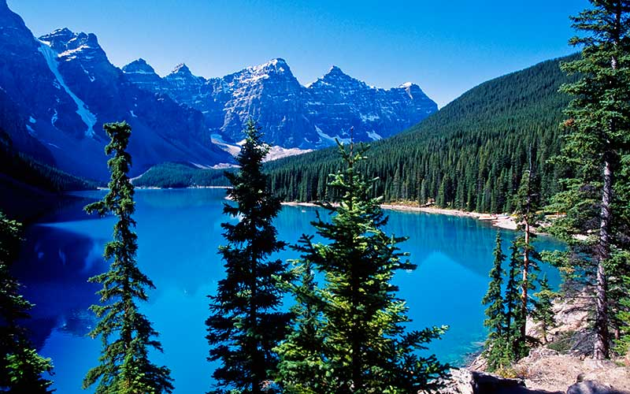
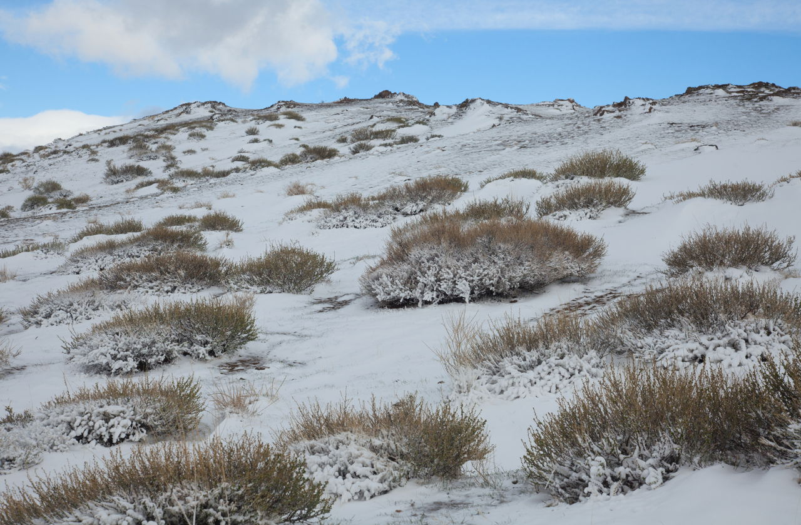
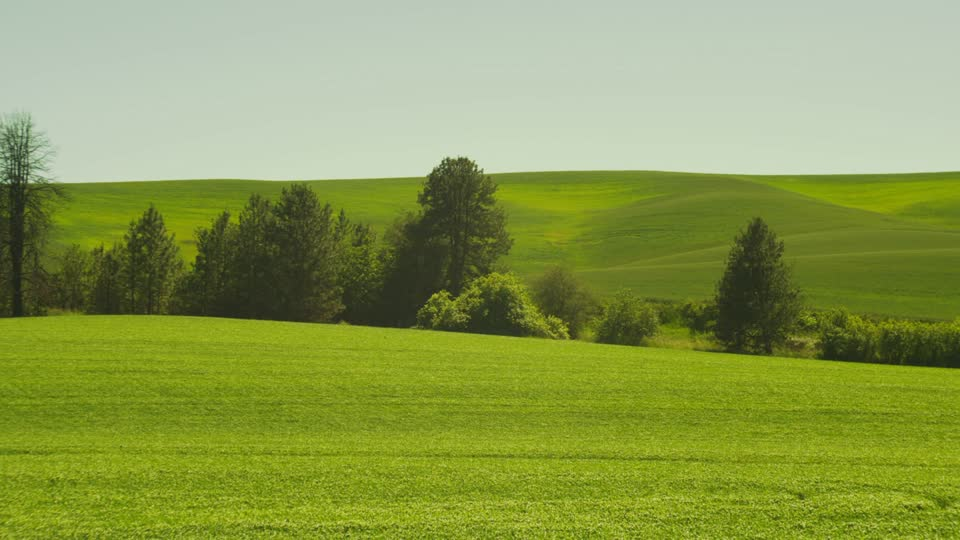
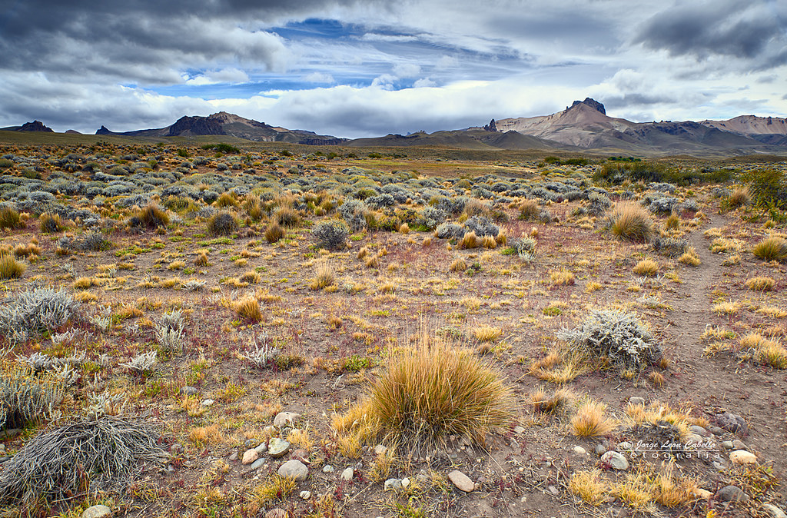
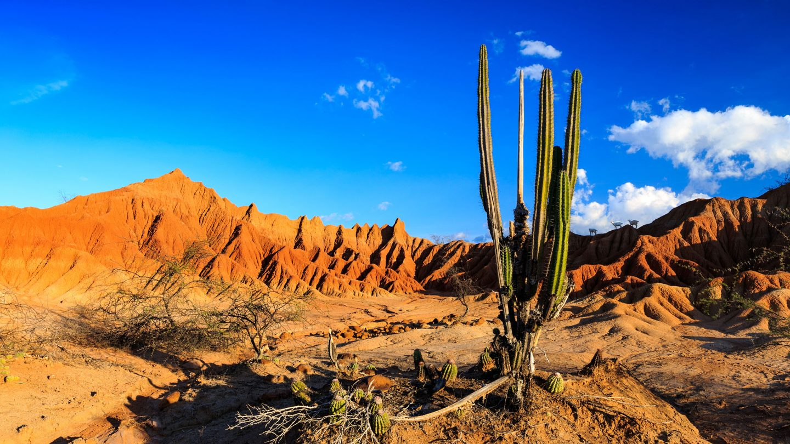

Regiones Naturales
Las regiones naturales son extensiones de territorio que comparten características semejantes como: clima, especies animales y vegetales, la presencia del agua, un relieve que las distingue una de otras, en ocasiones abarcan países o continentes.
Taiga
es caracterizado por sus formaciones boscosas y zona inhabitada, siendo la mayor masa forestal del planeta. Su flora está compuesta de árboles que alcanzan los 40 m, de copa piramidal y hoja perenne. Destacando los alerces, abetos píceas y pinos. Su fauna constituyes de animales como ratones, conejos liebres y en verano, gusanos excavadores e insectos.

Aquí tienes más información amigo.
La Tundra
Comprende una región de suelos cuya superficie se mantiene congelada la mayor parte del año, y permite el crecimiento de hierbas temporales de bajo desarrollo.
La fauna tiene la necesidad de protegerse del frío, existen herbívoros como el reno, el buey almizclero, la liebre ártica, la cabra nival, zorro ártico, oso kodiak, lobo, búho nival, halcón gerifalte.Las plantas comunes son los musgos y líquenes.

Aquí tienes más información amigo.
Pradera
tiene textura ligera, humedad en la mayor parte del año y en las noches se congela con frecuencia ya que están cerca de montañas. Varia la temperatura de 3° a 5°C, presenta suelo helado durante todo el año pero nunca desciende de -10°C. Flora caracterizado por hojas alternas y largas, con hojas en espigas,y granos secos. En su fauna se pueden encontrar renos, cabras, lobos entre otros.

Aquí tienes más información amigo.
Estepa
es un territorio llano, de vegetación herbácea, propia de condiciones climáticas que muestran altas temperaturas diurnas y muy bajas en las noches, además de escapa precipitación. La vegetación de esta zona esta compuesta por plantas xerófila, es decir plantas adaptadas de la escasez de agua. Su Fauna por perritos de praderas, bisontes americanos entre otros.

Aquí tienes más información amigo.
Desierto
comprende la región natural menos diversa biológicamente, después de la tundra, y está constituido por especies adaptadas a condiciones extremas, cuya morfología y hábitos están orientados a economizar la escasa precipitación. El 18 de Febrero de 1979, Nevó el Desierto de Sahara.

Aquí tienes más información amigo.
 Regresar
Regresar